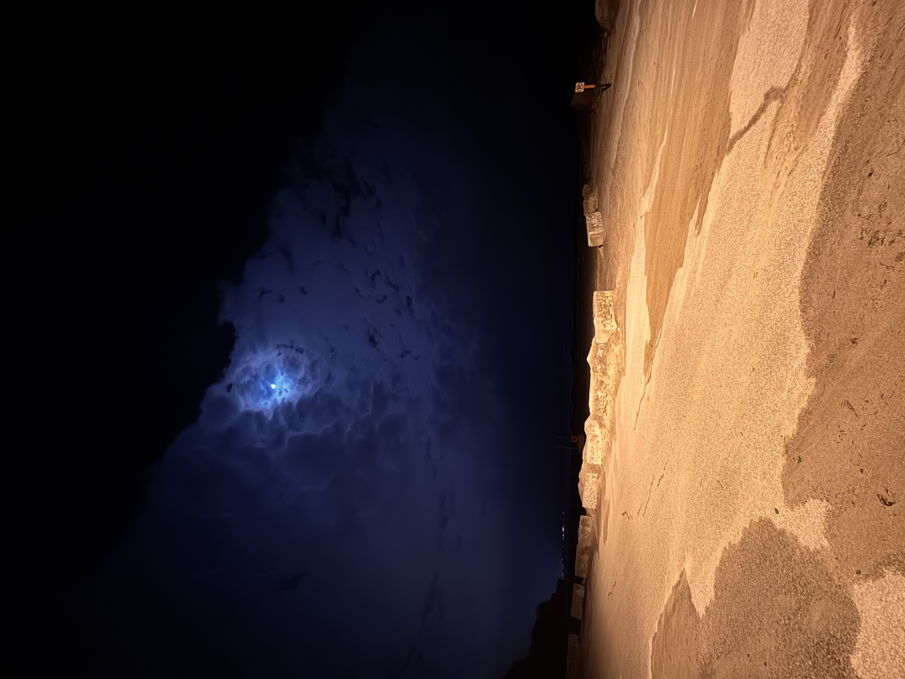

Here are some of my favorite pictures that I've taken most recently.
he Who's Highlighted from His GreatnessA Path Worth Taking is Took AloneDoes Anyone Care?A City Uncaring of A Lonesome ThoughtA Broken Heart an Engine StartedEvery Path Holds Something NewHeaven's Ornate CrownShifts Through Pain but Always Remains

An Opal in the Sky Paints the World BlueA Picture Painted Through SilhouettesA Lone Man's JourneyA Path Highlighted Through DarknessA Gun fired A Bullet UnheardGod Clears the Minds Of Those Who Gaze Upon HimBeauty in DestructionHe Who Ponders Sin